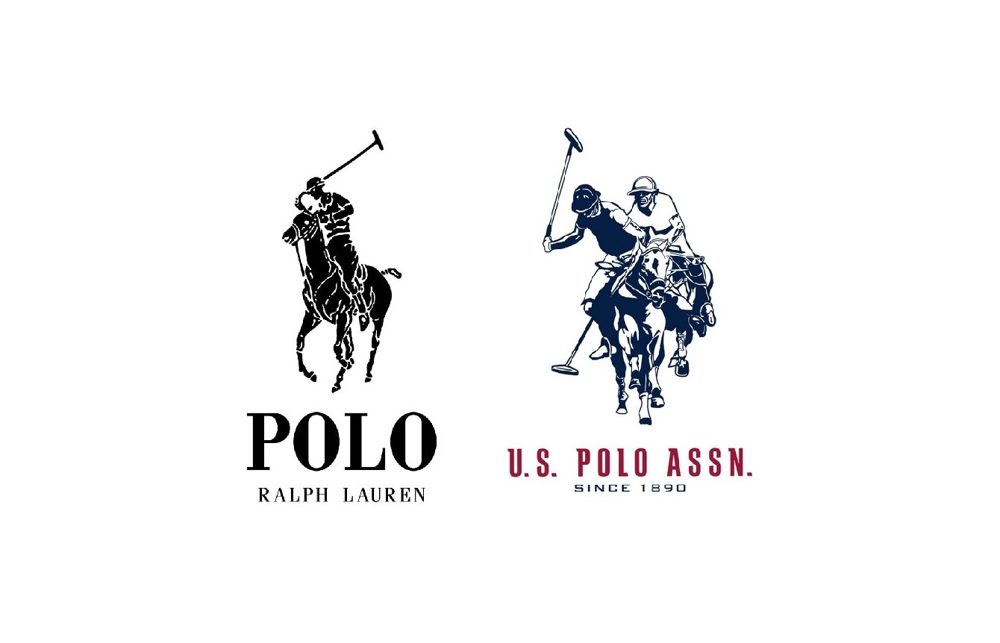
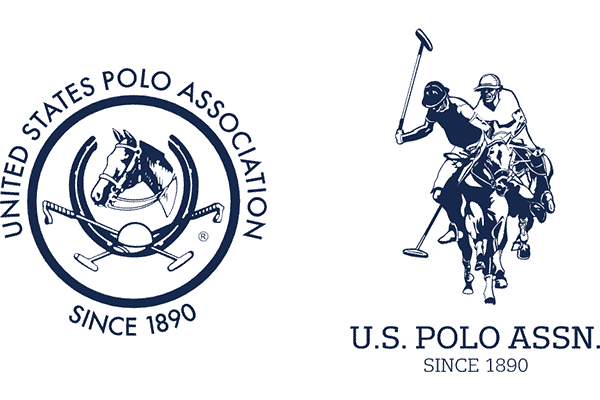

From the sideline
What’s the Difference Between the United States Polo Association and U.S. Polo Assn.?
What’s the Difference Between the United States Polo Association and U.S. Polo Assn.?
If you have ever shopped for a classic polo shirt, watched a match, or browsed an equestrian boutique, you have likely come across two very similar names: the United States Polo Association and U.S. Polo Assn.
While they share a name, a heritage, and a deep connection to the sport of kings, they serve two entirely different purposes. One is the official governing body of a sport, while the other is a massive global fashion brand.
Here is a quick guide to understanding the distinct roles of the United States Polo Association versus U.S. Polo Assn.
The United States Polo Association (USPA) Founded in 1890, the United States Polo Association is the official non-profit governing body for the sport of polo in the United States. It is one of the oldest sports governing bodies in the country.
The USPA exists purely to support the game itself. It is responsible for:
- Establishing and enforcing the official rules of the sport.
- Assigning player handicaps.
- Safety coordination, coaching clinics, and umpire training.
- Sanctioning national tournaments, including prestigious events like the U.S. Open Polo Championship.
- Supporting regional clubs, youth polo leagues, and intercollegiate programs.
In short, if it involves horses, mallets, safety helmets, and a polo field in America, the USPA is behind it.
U.S. Polo Assn. (The Retail Brand) U.S. Polo Assn. is the official commercial licensing brand of the United States Polo Association. Managed by USPA Properties, Inc., it was created to transform the heritage and aesthetic of the sport into a global clothing and lifestyle retail empire.
When you walk into a mall or shop online for casual apparel, watches, luggage, or footwear, you are interacting with the U.S. Polo Assn. brand.
Key facts about the brand include:
- It operates as a for-profit subsidiary, but a portion of its global retail royalties goes directly back to the USPA to fund and promote the sport.
- Its signature logo features two mounted polo players (the double horsemen).
- Its clothing lines capture a classic, sporty, and preppy aesthetic designed for both active lifestyles and spectators.
How Do They Relate to Each Other? The relationship is built on licensing. The United States Polo Association owns the trademarks, history, and intellectual property. It licenses those rights to USPA Properties, Inc., which manages the U.S. Polo Assn. brand.
Every time someone buys a branded polo shirt or pair of sneakers, they are indirectly supporting grass-roots polo programs, club maintenance, and the growth of the sport across the United States.
The Ralph Lauren Confusion You cannot talk about U.S. Polo Assn. without mentioning Polo Ralph Lauren. Or, as he's known to polo players (as opposed to 'players' at the local nightclub that wear Polo), 'Uncle Ralph'. They are entirely separate entities, and the two have a famous history of legal battles over trademarks. In fact, it's an ongoing 40-Year Trademark War.
To tell them apart on the racks, look at the logos:

- U.S. Polo Assn. features two polo players on horseback.
- Polo Ralph Lauren features a single polo player.
https://www.tiktok.com/@jcshomefindsvlogs/video/7164252189228125466
While Ralph Lauren is a high-fashion luxury house inspired by the polo lifestyle, U.S. Polo Assn. is directly tied to the actual, authentic sport.
Summary: A Quick Breakdown
- United States Polo Association: The non-profit organization that runs the sport, handles player handicaps, and organizes tournaments.

- U.S. Polo Assn.: The retail clothing and lifestyle brand that funds the sport through its global merchandise sales.
Both share a commitment to the heritage of polo, ensuring that the spirit of the game thrives both on the field and in the closet.